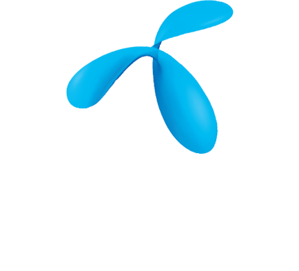
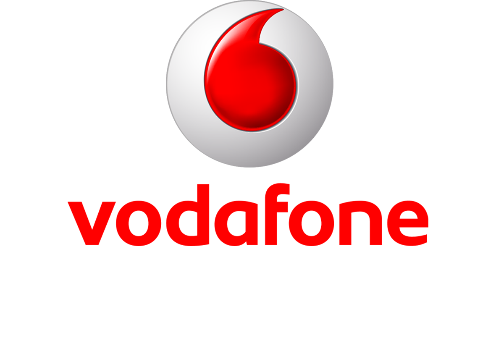

<!DOCTYPE html>
<!--if lt IE 7html.no-js.lt-ie9.lt-ie8.lt-ie7  
-->
<!--if IE 7html.no-js.lt-ie9.lt-ie8  
-->
<!--if IE 8html.no-js.lt-ie9  
-->
<!-- [if gt IE 8] <!-->
<html class="no-js">
  <!-- <![endif]-->
  <html lang="en" class="no-js"></html>
</html>
<html>
  <head>
    <meta charset="utf-8">
    <meta http-equiv="X-UA-Compatible" content="IE=edge">
    <meta name="viewport" content="width=device-width, initial-scale=1">
    <title>Testbirds</title>
    <link href="https://fonts.googleapis.com/css?family=Droid+Sans:400,700" rel="stylesheet" type="text/css">
    <meta name="description" content="whatever">
    <meta name="keywords" content="html5 template, css3, one page, animations, agency, portfolio, web design">
    <meta name="author" content="Kristof Vizy">
    <link href="bower_components/bootstrap/dist/css/bootstrap.min.css" rel="stylesheet">
    <link href="http://maxcdn.bootstrapcdn.com/font-awesome/4.2.0/css/font-awesome.min.css" rel="stylesheet">
    <link rel="shortcut icon" href="favicon.ico">
    <link rel="stylesheet" href="css/basic-styles.css" media="screen">
    <link href="css/merge.css" rel="stylesheet">
    <link rel="stylesheet" href="css/okayNav.css" media="screen">
    <link rel="stylesheet" href="css/header.css" media="screen">
    <!-- Facebook and Twitter integration-->
    <meta property="og:title" content="">
    <meta property="og:image" content="">
    <meta property="og:url" content="">
    <meta property="og:site_name" content="">
    <meta property="og:description" content="">
    <meta name="twitter:title" content="">
    <meta name="twitter:image" content="">
    <meta name="twitter:url" content="">
    <meta name="twitter:card" content="">
    <script src="js/modernizr.custom.js"></script>
    <script src="js/jquery.okayNav.js"></script>
  </head>
  <body>
    <header id="header"><a href="index.html" class="site-logo"></a>
      <nav id="nav-main" role="navigation" class="okayNav">
        <ul>
          <li><a href="rolunk.html">Rólunk</a></li>
          <li><a href="felhasznaloi.html">Felhasználói élmény kutatás</a></li>
          <li><a href="funkcionalis.html">Funkcionális teszt</a></li>
          <li><a href="#">Kapcsolat</a></li>
        </ul>
      </nav>
    </header>
    <div class="container">
      <div class="cover">
        <div class="row">
          <div class="col-md-6 text">
            <h1>Crowdtesting</h1>
            <h2>FELHASZNÁLIÓI FELÜLETEK TESZTELÉSE,<br>VALÓDI FELHASZNÁLÓKKAL,<br>VALÓS KÖRÜLMÉNYEK KÖZÖTT.</h2>
          </div>
          <div class="col-md-6 kep"></div>
        </div>
      </div>
      <div class="tesztek">
        <div class="row"><a href="funkcionalis.html" class="col-md-6 teszt1">
            <h2>Funkcionális teszt</h2>
            <p>Tárd fel tesztelőink segítségével felhasználói felületed működési hibáit!</p>
            <div class="imgholder"></div>
            <div class="navigator">
              <p>Szolgáltatások / Funkcionális teszt</p>
              <p class="more">></p>
            </div></a><a href="felhasznaloi.html" class="col-md-6 teszt2">
            <h2>Felhasználói élmény kutatás</h2>
            <p>Gyűjts visszajelzéseket, tapasztalatokat a tesztelőink által érzékelt felhasználói élményről!</p>
            <div class="imgholder"></div>
            <div class="navigator">
              <p>Szolgáltatások / Felhasználói élmény kutatás</p>
              <p class="more">></p>
            </div></a></div>
      </div>
      <div class="Elonyok">
        <div class="row">
          <div class="col-md-12">
            <h2 id="ctelonyei">A crowdtesting előnyei</h2>
            <div class="row list">
              <div class="col-md-3 el1">
                <h2>Releváns célcsoport</h2>
                <div class="navigator">
                  <p>Szolgáltatások / Felhasználói élmény kutatás</p>
                  <p class="more">>								</p>
                </div>
              </div>
              <div class="col-md-3 el2">
                <h2>Eszközök széles választéka</h2>
                <div class="navigator">
                  <p>Szolgáltatások / Felhasználói élmény kutatás</p>
                  <p class="more">>								</p>
                </div>
              </div>
              <div class="col-md-3 el3">
                <h2>Elfogulatlan tesztelők</h2>
                <div class="navigator">
                  <p>Szolgáltatások / Felhasználói élmény kutatás</p>
                  <p class="more">></p>
                </div>
              </div>
              <div class="col-md-3 el4">
                <h2>Visszajelzések rövid időn belül</h2>
                <div class="navigator">
                  <p>Szolgáltatások / Felhasználói élmény kutatás</p>
                  <p class="more">></p>
                </div>
              </div>
            </div>
          </div>
        </div>
      </div>
      <div class="folyamat">
        <div class="row">
          <div class="col-md-12">
            <h2>Testbirds szolgáltatási folyamat</h2>
          </div>
          <div class="col-md-4">
            <div class="circle elso"></div>
            <h2>Tesztelési célok</h2>
            <p>közös kialakítása</p>
          </div>
          <div class="col-md-4">
            <div class="circle masodik"></div>
            <h2>Felhasználói tesztelés</h2>
            <p>Testbirds managerek vezetésével</p>
          </div>
          <div class="col-md-4">
            <div class="circle harmadik"></div>
            <h2>Tesztelési eredmények</h2>
            <p>összefoglalása és bemutatása</p>
          </div>
          <div class="col-md-12">
            <div class="circlewoman"></div>
            <h3>Érdeklődnél szolgáltatásaink iránt? Lépj kapcsolatba velünk!</h3>
            <div class="btn-primary">Ajánlatot kérek!</div>
          </div>
        </div>
      </div>
      <div class="col-md-12 companies">
        <div class="col-md-2"></div>
        <div class="col-md-2"></div>
        <div class="col-md-2"></div>
        <div class="col-md-2"></div>
        <div class="col-md-2 no"></div>
        <div class="col-md-2 no"></div>
      </div>
    </div>
    <footer class="container-fluid">
      <div class="row">
        <div class="col-md-4">
          <h5>Legutóbbi blogbejegyzések</h5><a>Etikus design – Az AMUSE konferencián jártunk<br></a><a>Szek.org: Hogyan javítsuk online felületünket?<br></a><a>UX teszt: A kutatási kérdések tisztázása<br></a><a>UX teszt: A célok tisztázása<br></a><a>UX teszt: Az elvárások tisztázása<br></a>
        </div>
        <div class="col-md-2"></div>
        <div class="col-md-3">
          <h5>Oldaltérkép</h5><a>Rólunk<br></a><a>Funkcionális tesztelés?<br></a><a>Felhasználói élmény kutatás<br></a><a>Ajánlatkérés<br></a><a>Kapcsolat<br></a>
        </div>
        <div class="col-md-3">
          <h5>Kapcsolat</h5>
          <p>1118 Budapest,<br></p>
          <p>Himfy utca 1.<br></p>
          <p>(30) 569 5988</p>
          <p>info@testbirds.hu</p>
        </div>
      </div>
    </footer>
    <script src="//cdnjs.cloudflare.com/ajax/libs/jquery/2.2.0/jquery.min.js"></script>
    <!-- build:js js/jquery.okayNav-min.js-->
    <script src="js/jquery.okayNav.js"></script>
    <!-- endbuild-->
    <script type="text/javascript">var navigation = $('#nav-main').okayNav();</script>
  </body>
</html>